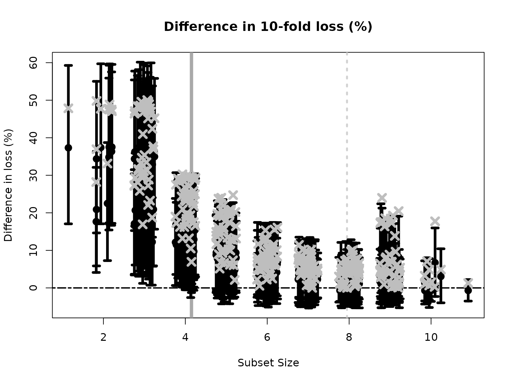

Targeted prediction
Given a regression model \(M\) for data \((X, y)\), it is often a priority to summarize (or interpret) \(M\). Further, the primary decision task or scientific inquiry is frequently described by a functional \(h(y)\), such as exceedance of a threshold. Targeted prediction customizes the summarization of \(M\) specifically for \(h\), including linear coefficient estimates/intervals and subset selection (Kowal, 2021). This is achieved using Bayesian decision analysis for \(h(\tilde{y})\), where \(\tilde{y}\) is a posterior predictive variable under \(M\).
There are several reasons to use targeted prediction:
We can summarize \(M\) for multiple functionals \(h_1, h_2, \ldots\) without refitting the model for each \(h_k\);
The model \(M\) provides regularization for \(\tilde{y}\) and thus \(h(\tilde{y})\), which offers downstream benefits for point/interval estimation and selection (e.g., if \(y\) is functional data and \(h\) is the maximum; see Kowal, 2021 for examples); and
More generally, the functional may be written \(h(\theta, \tilde{y})\) for model \(M\) parameters \(\theta\), and thus depends on unobservables (and so cannot be computed directly from the data \(y\)).
Binary outcomes
We will focus on binary functionals \(h:\mathbb{R}\to \{0,1\}\), so that \(h(\tilde{y})\) and \(h(y)\) are binary. Thus,
this example will also highlight the capabilities of
BayesSubsets for binary outcomes. Specifically, the
decision analysis requires a choice of a loss function. Implementations
are available for both cross-entropy loss and
misclassification rate; we will focus on the former.
Getting started
We begin by installing and loading the package:
# devtools::install_github("drkowal/BayesSubsets")
library(BayesSubsets)For this example, we will consider simulated data with correlated covariates \(X\) and a continuous outcome \(y \in \mathbb{R}\):
# To reproduce:
set.seed(123)
# Simulate some data:
dat = simulate_lm(n = 200, # number of observations
p = 10, # number of predictors
p_sig = 5, # number of true signals
SNR = 1 # signal-to-noise ratio
)
# Store the data:
y = dat$y; X = dat$XNext, we fit a Bayesian linear model. The output from
bayeslm does not include posterior predictive draws or
log-predictive density evaluations, so we compute those as well.
# Package for efficient Bayesian linear regression:
library(bayeslm)
# Fit the Bayesian regression model:
fit = bayeslm(y ~ X[,-1], # intercept already included
N = 10000, # MCMC samples to save
burnin = 5000 # initial samples to discard
)
#> horseshoe prior
#> fixed running time 0.00209821
#> sampling time 0.210797
# Extract the posterior predictive draws and lpd:
temp = post_predict(post_y_hat = tcrossprod(fit$beta, X),
post_sigma = fit$sigma,
yy = y)
post_y_pred = temp$post_y_pred
post_lpd = temp$post_lpdTo this point, there is no mention of the functional \(h\): we observed data \((X, y)\) and fit a Bayesian model \(M\). Importantly, we can define many different options for \(h\) from this point forward, without the need to refit \(M\).
Defining the functional
We will define \(h\) as the exceedance of a threshold: \[ h(t) = 1(t \ge \tau) \] where \(\tau\) is specified in advance. We will fix \(\tau\) at the 90th quantile:
The critical term is the posterior predictive distribution of \(h(\tilde{y})\), and its expectation. This is easy to compute:
# Posterior predictive draws of h:
post_h_pred = h(post_y_pred)
# Fitted values:
h_bar = colMeans(post_h_pred)A subtle yet important point is that these fitted values \(\bar{h} = \mathbb{E}\{h(\tilde{y}) | y\} \in [0,1]\) are continuous, while \(h(y) \in \{0,1\}\) are binary. For a well-specified model \(M\), \(\bar{h}\) may be more informative than \(h(y)\) because it lies along a continuum.
Computing optimal linear coefficients
Given any Bayesian regression model \(M\) and any subset of covariates \(S\), we compute the optimal linear coefficients according to Bayesian decision analysis. Kowal (2021) showed that the coefficients can be computed (under cross-entropy loss) using “fit-to-the-fit”, and specifically a logistic regression model with response \(\bar{h}\) and covariates \(X_S\), i.e., the covariate matrix \(X\) restricted to the columns selected in \(S\). For an example subset \(S = \{1,3,10\}\) and cross-entropy loss, the following code computes our optimal linear summary:
Uncertainty quantification for the linear coefficients
We may also obtain posterior uncertainty quantification for the linear coefficients that are active (nonzero) in \(S\). To do so, we compute the same logistic regression for each posterior predictive draw of \(h(\tilde{y})\), which induces a posterior predictive distribution for the linear coefficients under the model \(M\)—even though \(M\) is not a model for binary data. We summarize those posteriors using 95% credible intervals.
# Posterior predictive draws of *all* coefficients:
sub_sims = sample(1:nrow(post_h_pred), 1000) # just use 1000 draws
post_beta_s = proj_posterior(post_y_pred = post_h_pred[sub_sims,],
XX = X,
sub_x = S_ex,
use_ols = FALSE)
dim(post_beta_s) # the coefficients outside S_ex are fixed at zero
#> [1] 1000 11
# Compute 95% credible intervals for the nonzero entries:
t(apply(post_beta_s[,S_ex], 2,
quantile, c(0.05/2, 1 - 0.05/2)))
#> 2.5% 97.5%
#> X1 -3.2129778 -1.8746403
#> X3 0.6244174 2.2529052
#> X10 -0.9761212 0.2704743Bayesian subset search
To search across candidate subsets, we use a branch-and-bound
algorithm with a weighted least squares approximation to the
cross-entropy loss. This approximation uses the logit of \(\bar{h}\) as the response and \(\bar{h}(1 - \bar{h})\) as the weights. For
small \(p\) it may be possible to
enumerate all possible subsets. Here, we screen to the “best”
n_best = 50 models of each size according to squared error
loss. We store these in a Boolean matrix indicators: each
row is an individual subset, while the columns indicate which variables
are included (TRUE) or excluded (FALSE). We
also check to make sure that \(\bar{h} \ne
0\) and \(\bar{h} \ne 1\), which
can occur numerically and creates problems for the logit call.
# Make sure we do not have any zeros or ones:
h_bar[h_bar == 0] = min(h_bar[h_bar != 0]) # set to the non-zero min
h_bar[h_bar == 1] = max(h_bar[h_bar != 1]) # set to the non-one max
indicators = branch_and_bound(yy = log(h_bar/(1 - h_bar)), # response is the logit of h_bar
XX = X, # covariates
wts = h_bar*(1 - h_bar), # weights for weighted least squares
n_best = 50 # restrict to the "best" 50 subsets of each size
)
# Inspect:
indicators[1:5, 1:10]
#> X1 X2 X3 X4 X5 X6 X7 X8 X9 X10
#> force_in TRUE FALSE FALSE FALSE FALSE FALSE FALSE FALSE FALSE FALSE
#> TRUE TRUE FALSE FALSE FALSE FALSE FALSE FALSE FALSE FALSE
#> TRUE FALSE FALSE TRUE FALSE FALSE FALSE FALSE FALSE FALSE
#> TRUE FALSE TRUE FALSE FALSE FALSE FALSE FALSE FALSE FALSE
#> TRUE FALSE FALSE FALSE FALSE FALSE FALSE FALSE TRUE FALSE
# Dimensions:
dim(indicators)
#> [1] 362 11
# Summarize the model sizes:
table(rowSums(indicators)) # note: intercept always included
#>
#> 1 2 3 4 5 6 7 8 9 10 11
#> 1 10 45 50 50 50 50 50 45 10 1The acceptable family of “near-optimal” subsets
From this large collection of 362 candidate subsets, we seek to filter to the acceptable family of subsets, i.e., those “near-optimal” subsets that predict about as well as the “best” subset. These are computed based on 10-fold cross-validation, and use the out-of-sample predictive distribution from \(M\) to provide uncertainty quantification for predictive accuracy.
# Compute the acceptable family:
accept_info = accept_family_binary(post_y_pred = post_h_pred,
post_lpd = post_lpd,
XX = X,
indicators = indicators,
loss_type = "cross-ent",
yy = h(y))
# How many subsets are in the acceptable family?
length(accept_info$all_accept)
#> [1] 257
# These are the rows of `indicators` that belong to the acceptable family:
head(accept_info$all_accept)
#> [1] 57 58 59 60 63 64
# An example acceptable subset:
ex_accept = accept_info$all_accept[1]
which(indicators[ex_accept,])
#> X1 X2 X5 X6
#> 1 2 5 6The plot shows how the out-of-sample predictive performance varies across subsets of different sizes, specifically relative (% change) to the “best” subset (by minimum cross-validated error; dashed gray vertical line). The x-marks are the (usual) empirical cross-validated error, while the intervals leverage the predictive distribution from \(M\) to quantify uncertainty in the out-of-sample predictive performance. While performance improves as variables are added, it is clear that several smaller subsets are highly competitive—especially when accounting for the predictive uncertainty.
Subset selection: the smallest acceptable subset
If we wish to select a single subset, a compelling representative of the acceptable family is the smallest acceptable subset. This choice favors parsimony, while its membership in the acceptable family implies that it meets a high standard for predictive accuracy. From the previous plot, we select the smallest subset for which the intervals include zero (solid gray vertical line).
# Simplest acceptable subset:
beta_hat_small = accept_info$beta_hat_small
# Which coefficients are nonzero:
S_small = which(beta_hat_small != 0)
# How many coefficients are nonzero:
length(S_small)
#> [1] 4We can obtain posterior samples and credible intervals for the coefficients as before:
# Draws from the posterior predictive distribution
post_beta_small = proj_posterior(post_y_pred = post_h_pred[sub_sims,], # just use 1000 draws
XX = X,
sub_x = S_small,
use_ols = FALSE)
# Compute 95% credible intervals for the nonzero entries:
t(apply(post_beta_small[,S_small], 2,
quantile, c(0.05/2, 1 - 0.05/2)))
#> 2.5% 97.5%
#> X1 -3.711372 -2.01259590
#> X2 1.019795 2.73711706
#> X5 -1.289039 -0.08855023
#> X6 -1.497176 -0.06492849Variable importance from acceptable subsets
Another useful summary of the acceptable family is the variable importance, which reports, for each variable \(j\), the proportion of acceptable subsets in which \(j\) appears. We are particularly interested in distinguishing among those variables that occur in all, some, or no acceptable subsets, which provides insight about which variables are indispensable (“keystone covariates”) and which variables are part of a “predictively plausible” explanation.
# Variable importance: proportion of *acceptable subsets* in which each variable appears
vi_e = var_imp(indicators = indicators,
all_accept = accept_info$all_accept)$vi_inc
# "Keystone covariates" that appear in *all* acceptable families:
which(vi_e == 1)
#> 1
#> 1
# Irrelevant covariates that appear in *no* acceptable families:
which(vi_e == 0)
#> named integer(0)
# Visualize:
barplot(vi_e[order(vi_e, (ncol(X):1))], # order...
horiz = TRUE,
main = paste('Variable importance for the acceptable family'))
abline(v = 1)Most variables belong to some, but not all, acceptable subsets.
Conclusions
Even for various functionals \(h\)
and/or binary outcomes, the pipeline is nearly identical to the simpler
continuous outcome case. For binary outcomes, the code is moderately
slower: repeated evaluations of glm are less efficient than
lm, and these are needed for 1) posterior predictive
uncertainty quantification via proj_posterior (with
use_ols = FALSE) and 2) predictive evaluation to construct
the acceptable family via accept_family_binary. However,
there is no need to refit \(M\) for
different choices of \(h\) (e.g.,
varying the threshold \(\tau\)), which
can be a substantial time-saver when \(M\) is complex (e.g, a functional data
regression model). Finally, we note that if \(M\) is a binary regression model and \(h(t) = t\) is unnecessary, then we can
replace post_h_pred with post_y_pred
throughout (and y simply replaces h(y)).